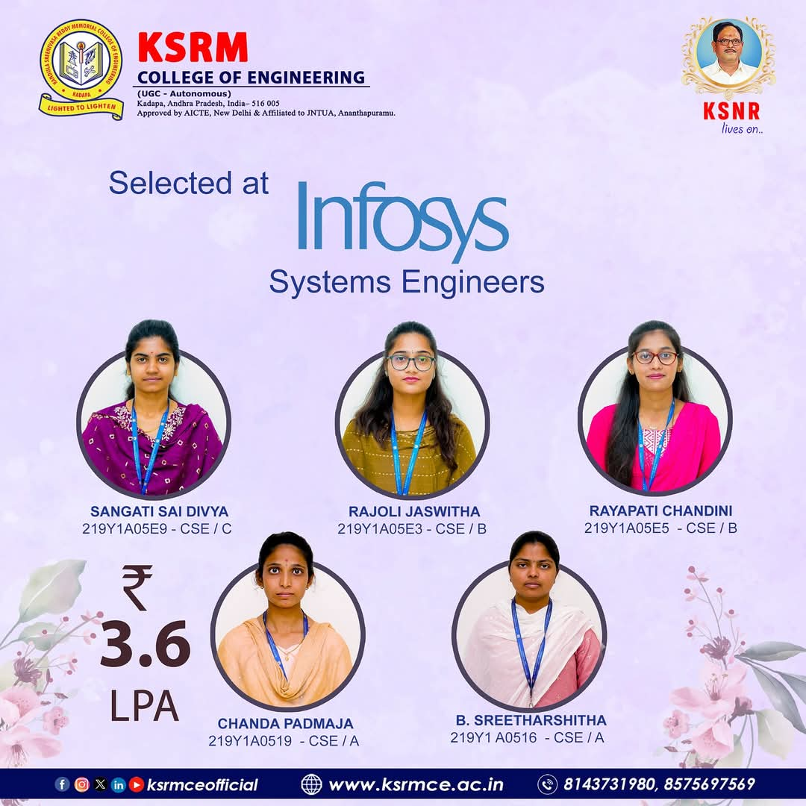

🌸 Women in Tech: KSRMCE Students Selected by Infosys
Institution: K.S.R.M. College of Engineering, Kadapa
Recruiter: Infosys
Position: Systems Engineer
Salary: ₹3.6 LPA
We are proud to announce that five talented female students from the Computer Science and Engineering department have been selected by Infosys as Systems Engineers. This achievement highlights their dedication and the college's commitment to empowering women in technology.
Selected Students:
- Student A – CSE A
- Student B – CSE B
- Student C – CSE A
- Student D – CSE B
- Student E – CSE A
These selections are a testament to the hard work and perseverance of our students, as well as the supportive environment fostered by KSRMCE. We congratulate them on this significant milestone and wish them continued success in their careers.